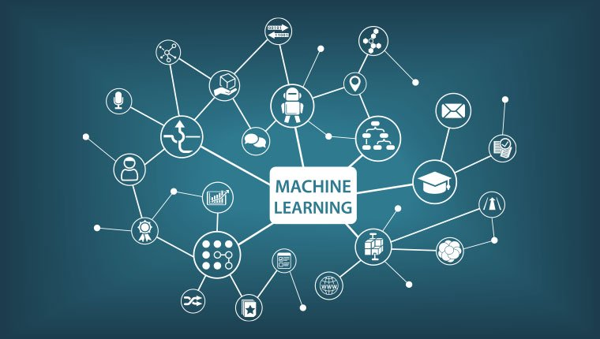

Machine Learning (Simon)
Machine learning is a form of way for AI to learn from information and data rather than from distinct programming. There are multiple uses for AI learning and by using training data, applications such as spam filtering to sorting out transactional records or to even identify medical anomalies in scans can exist. By using varied algorithms, computers can develop a neural network that repetitiously learns from training data to improve, predict and describe outcomes or objects. By learning from the training data, it is able to provide an even more accurate model based on that data. For example, a predictive algorithm would create a predictive model. When provided with data, it would output predictions based on the model. For example, when visiting an online shop and starts viewing and reading reviews, the user is presented with similar interesting products. These suggestions are not hard coded into the shop, but are the predictions of the algorithm. By observing different users browsing history and looking over the trends, predictive algorithms present other shopping items that they might be interested in. The rise of machine learning is evident, with companies such as Google developing DeepMind which specialises in many fields, including deep learning
Right now, artificial intelligence and machine learning could be considered the biggest revolution of our time, as it can be developed in ways that can benefit day-to-day effectiveness. The development in machine learning can be evident though self driving cars, in which a computer has to understand the traffic around, obstacles and road rules. Using existing platforms, such as maps and gps services, cars can avoid traffic jams or even protect you by quickly reacting and stopping the vehicle in danger. There is also huge potential for machine learning in the entertainment industry, as it has already found uses in streaming services such as Netflix, Spotify and even Youtube. For instance, predictive models analyse users behaviour and predict what the user would like to listen or watch to, or even eliminate buffer and low quality playback. Other uses can include the rise in AI-integrated security cameras, attributed by machine learning. Using facial recognition software and machine learning, cameras can identify visitors, allowing the system to instantly detect unwanted guests.
The rise of AI and machine learning is evident, especially in this pandemic, where more and more users are more dependent on technology. Making breakthroughs that no one could predict, from facial recognition on phones to self driving cars, the rate of machine learning is exponentially expanding. In the next few years, the rate of machine learning will only improve, as hardware stops being the bottleneck of the development. There are different fields in machine learning, from image recognition to language models. For example, Jeff Dean, a computer scientist from Google’s AI division, stated that the “the progress made” in computer vision was a “26% error in 2011 to 3% error in 2016”. This means that computers are better than humans at recognizing and analyzing images.

Last year, the rise of deep fakes made headlines, with fake incriminating videos becoming popular. By using machine learning and giving the algorithm training data of someone's face, it can ‘transplant’ peoples faces onto other bodies, making the video look like the real thing. Today, anyone can download deepface software to make convincing fake videos. Combating this, some computer scientists from the ‘Visual Computing Group’ published a paper on how they are using machine learning to combat and prevent the further spread of deep fakes.
In a few years, the automotive industry might be affected the most with machine learning. With huge companies such as Tesla, Mercedes Benz, Nissan, ect developing self driving cars, it wouldn't be a stretch to say that you could sit in a car and let it find the quickest route to the location and ensure your safety.
Machine learning and AI has already changed daily life. With the digital age, all the information is on the internet, at the tip of your fingertips. Websites and services would use machine learning algorithms to find user habits and browsing history, recommending interesting and relevant products that they might buy. What might change in the future is the way hospitals care for people's wellbeing. Analysing symptoms, medication dates, operations, and genetic history, machine learning can predict people's health in the future. By using a predictive model, it would be used to tackle genetic diseases by tracking problems.
Considering how many people use banks and have cards, it would be impossible for employees to sift through hundreds of thousands of transactions. By using machine learning to identify patterns, such as purchasing patterns and location data, it can help banks identify fraudulent activity while it is happening.
Machine learning can automate a lot of daily tasks, such as organizing data or creating journals. As AI’s continue to grow with training data, more and more jobs will be taken by our machine overlords. http://willrobotstakemyjob.com, is a website dedicated to simply answer if AI will affect the jobs in the next twenty years. Jobs such as retail salespeople will be replaced with self serve counters, or market analysis researchers being replaced by AI that do the job faster with a simple command.
While some jobs might disappear in the future, many more will be created in its place. For example, machine learning cannot replace human skills, even if it has been given a lot of training data. Teachers, Sales and marketing, customer services and innovation workers cannot be replaced, and is expected to increase in demand.
In my daily life, machine learning does not affect me that much. Sometimes it is useful, like when google auto completes my search quirtys, but that's probably about it. Virtual personal assistants, such as Siri or Alexa don’t feel real enough to talk to, and they provide very limited answers. Useful apps, such as google maps use AI learning to identify the quickest routes and the best way to avoid traffic, which is very helpful during a daily commute to university.
Your social life on social media is public, and that gives machine learning a lot of training data. For example, by understanding your location, profiles that you visit, interests and workplace, facebook can give users recommended friends. Other features that can be used is facial recognition, checking faces in photos, identifying unique features and tagging friends automatically in your friends list. This might affect a lot of people, due to facebook's frequent data breaches, but I do not use any social media other than to contact friends. Having a large company know everything about you is not very comforting for me.
I use google email all the time, and to have it organized in lists and not to worry about spam is one of the benefits with machine learning. I’m sure that everyone appreciates a good spam filter, and with machine learning, it will learn how to detect more spam faster.
Sometimes I would need to buy something, and the most convenient way is to do it online on ebay or amazon. As you guessed, machine learning refines my shopping experience by showing me similar products to compare values and tempt me into buying.